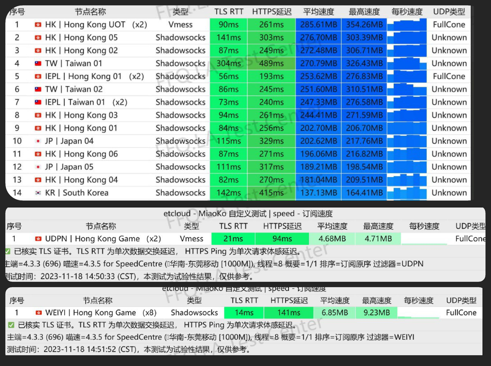

EteralNetwork
付费机场推荐
Eteral Network - 你的网络安全之选
在数字时代，保护个人隐私和信息安全至关重要。Eternal Network致力于提供卓越的VPN服务，确保您的网络活动始终得到保护。我们的服务包括：
全球服务器覆盖： 通过我们的多个服务器位置，畅游全球互联网，畅快体验无边界的网络。
高速连接： 不再受制于网络速度。Eternal Network提供快速、稳定的连接，确保您无论身在何处都能畅通无阻。
强大的加密技术： 我们采用最先进的加密技术，保障您的个人信息免受恶意攻击。
点击
并注册账号
*此页面为赞助商推广广告，为公益推广，项目作者不会从中获利，所有利润将全部捐赠给 SDGs
或赠送给作者的朋友。支持本项目可以通过此邀请码注册账号，选择套餐购买。
测速结果
2024年4月15日更新

方案列表
2024年4月15日更新
焦糖布丁🍮
¥6.00 月付
🍮"焦糖布丁里有"
⏳ 节点流量 55GB
🚀 超低延迟隧道
✈️ 最高可达5Gbps带宽
🎥 完美观看网飞，迪士尼等剧场
🌏️ 含有全球大量的原生ISP节点
芒果布丁🍮
¥10.00 月付
🍮"芒果布丁里有"
⏳ 节点流量 120GB
🚀 超低延迟隧道 + IPIC专线
✈️ 最高可达5Gbps带宽
🎥 完美观看网飞，迪士尼等剧场
🌏️ 含有全球大量的原生ISP节点
抹茶布丁🍮
¥23.00 月付
🍮"酸奶布丁里有"
⏳ 节点流量 320GB
🚀 超低延迟隧道 + IPIC专线
✈️ 最高可达5Gbps带宽
🎥 完美观看网飞，迪士尼等剧场
🌏️ 含有全球大量的原生ISP节点
酸奶布丁🍮
¥45.00 月付
🍮"酸奶布丁里有"
⏳ 节点流量 680GB
🚀 超低延迟隧道 + IPIC专线
✈️ 最高可达5Gbps带宽
🎥 完美观看网飞，迪士尼等剧场
🌏️ 含有全球大量的原生ISP节点
抹茶布丁🍮
¥16.00 月付
🍮"抹茶布丁里有"
⏳ 节点流量 235GB
🚀 超低延迟隧道 + IPIC专线
✈️ 最高可达5Gbps带宽
🎥 完美观看网飞，迪士尼等剧场
🌏️ 含有全球大量的原生ISP节点
节点列表
2024年4月15日更新
HK | Hong Kong 01 | x 1 | 倍率
HK | Hong Kong 02 | x 1 | 倍率
HK | Hong Kong 03 | x 1 | 倍率
HK | Hong Kong 04 | x 1 | 倍率
HK | Hong Kong 05 | x 1 | 倍率
HK | Hong Kong 06 | x 1 | 倍率
JP | Japan Broadband | x 1 | 倍率
JP | Japan 01 | x 1 | 倍率
JP | Japan 02 | x 1 | 倍率
JP | Japan 03 | x 1 | 倍率
TW | Taiwan Broadband | x 1 | 倍率
TW | Taiwan 01 | x 1 | 倍率
TW | Taiwan 02 | x 1 | 倍率
MO | Macao 01 | x 1 | 倍率
SG | Singapore 01 | x 1 | 倍率
SG | Singapore 02 | x 1 | 倍率
SG | Singapore 03 | x 1 | 倍率
SG | Telegram Optimize (x2) | x 2 | 倍率
PH | Philippines Broadband | x 1 | 倍率
IN | India 01 | x 1 | 倍率
KP | North Korea 01 | x 1 | 倍率
KR | South Korea | x 1 | 倍率
MY | Kuala Lumpur 01 | x 1 | 倍率
ZA | Johannesburg 01 | x 1 | 倍率
AR | Argentina 01 | x 1 | 倍率
UK | United Kingdom 01 | x 1 | 倍率
DE | Germany 01 | x 1 | 倍率
DE | Germany 02 | x 1 | 倍率
CA | Toronto | x 1 | 倍率
US | Durham Broadband | x 1 | 倍率
US | San Jose 01 | x 1 | 倍率
US | Los Angeles 02 | x 1 | 倍率
US | Los Angeles 03 | x 1 | 倍率
US | Starlink Global | x 1 | 倍率